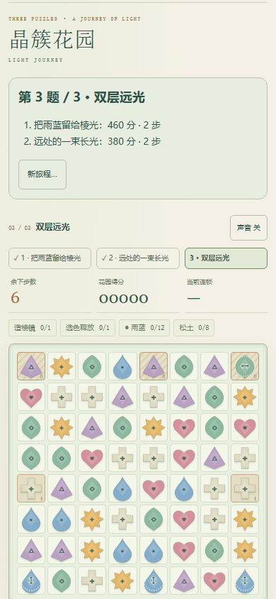
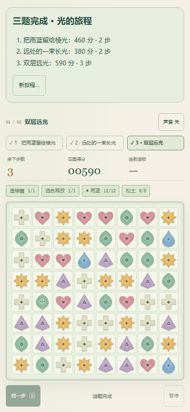
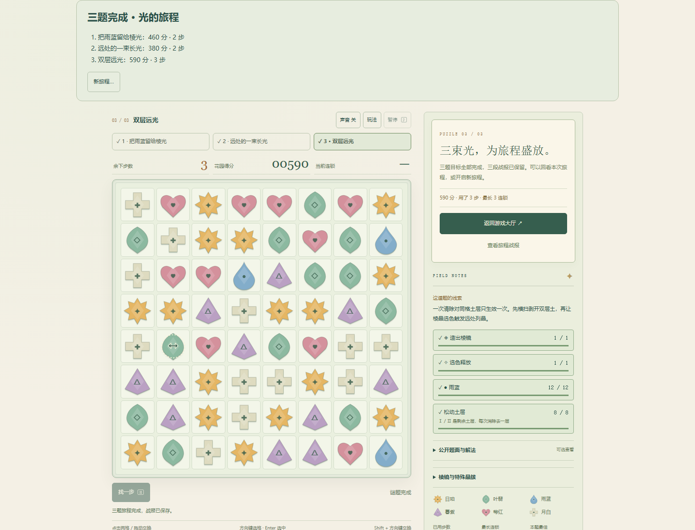
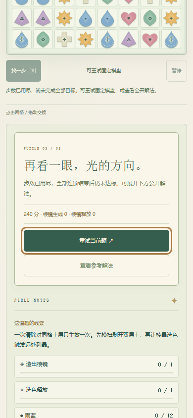
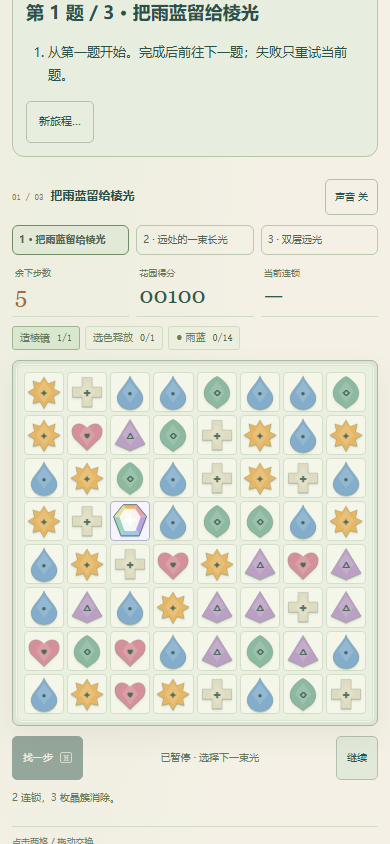

保留原两题的棋盘、种子、解法、数值与消除规则，新增原创第三题“双层远光”，接成连续三题、当前题失败重试、关间目标与最终战报。原v2自由选择、原20关和存档不改；新旅程单独存储，不增加目录数量。
第三题6步预算，先交换首行横扫晶剥去3处双层土的第一层，再造棱镜，选雨蓝触发3个远端列晶，清掉剩余土。正常3步解590分、8层土、雨蓝12枚，余3步。模型省略先剥土、直接棱镜选蓝只清6/8层；选错颜色后耗尽也失败。不是原图转置、换皮或增加生命。
2026-10-22，本机Chromium1440×1100及390×844 CSS。前两题原生键盘选格，第三题CDP触控模拟点格；采用公开作者解，无盲解或真人手感宣称。未注入局面、步数、时间、分数、胜负或完成档来完成这三题。
| 题目 | 普通UI结果 |
|---|---|
| 把雨蓝留给棱光 | 460分，2步 |
| 远处的一束长光 | 380分，2步 |
| 双层远光 | 590分，3步，8层土与全部目标完成 |
第三题先用6次合法交换自然耗步失败（未造棱），刷新仍为失败且前两题战报不丢；重试回6步/0分后正常完成。第一题造棱后的稳定盘刷新精确恢复并先暂停；第一题关间结果刷新保留。原生触控取消不触发交换、不残留拖动。


末尾测试触控计数观察变量在此前刷新后丢失，报告收尾脚本异常并关闭了浏览器；游戏pageerror/网络错误均为空。三题真实完成和终态诊断已记录。后续“终态刷新、不重复结算、新旅程确认/取消”使用从这份实际UI终态记录重建的明确存档夹具，并非仍存活的完成会话，也不计第二次普通UI通关。原始适配器失败信息保留在普通UI JSON中。后续本地短验确认42目录入口、搜索及键盘返回焦点正常，未重跑三题。
另从新旅程用真实touch事件完成一次造棱交换及暂停恢复，记录4次可信touch事件；模拟不是真机。独立注入配额失败，确认旧有效字节不删、告警准确且恢复写入后清除；坏档原字节及旧v2键保持。9组模型/旅程存储测试，加5组原题逐动画/补盘/RNG重放及终态边界检查；模型可解不代表真人乐趣。



规则源码在checkpoint/restore之前与原版逐字节一致；仅新版本扩展稳定胜败快照，活动恢复仍先暂停，动画刷新回上一步稳定盘。无新依赖、服务、版权素材或凭据。真人盲解体验、真实设备触感/性能、声音、长期难度及审美尚未验收；原20关未重复试玩。
普通UI与适配器边界 · 后续夹具/触控/存储 · 目录短验 · 原题兼容与终态验证 · 有序解法及失败模型 · 9组可重跑测试。上线状态以最终SHA与Pages运行核验为准，本页不把本地预览称为上线。